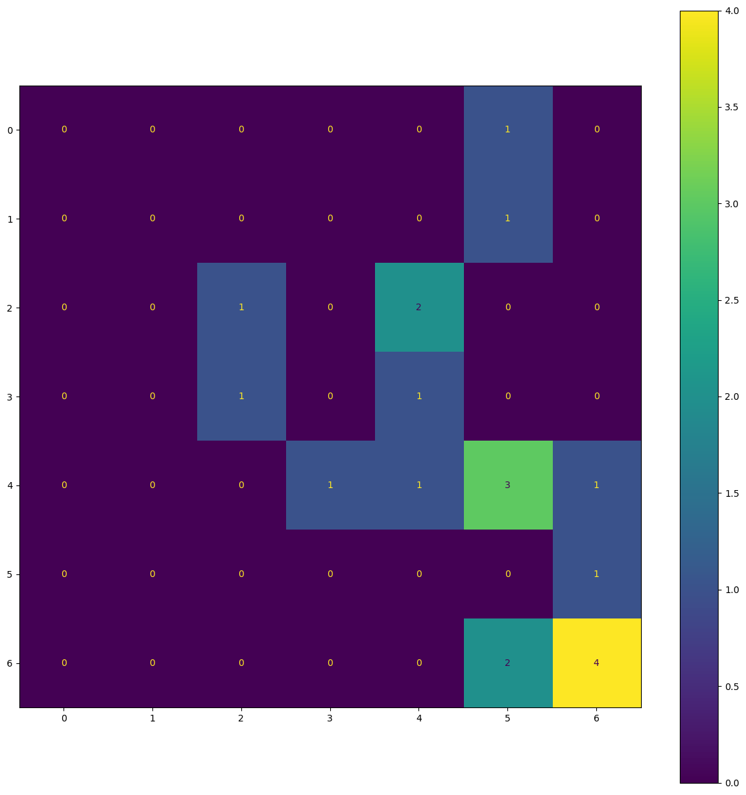

#hide
from nbdev.showdoc import *Core functionality
Core functions
git lfs update --forceUpdated Git hooks.testing
from numpy.testing import assert_allclose
from toolz.dicttoolz import valmap
from collections import Counter
from toolz import frequencies
from dotenv import load_dotenv
import osload_dotenv()
HF_TOKEN = os.getenv("HF_TOKEN")Data loading
# !git clone https://huggingface.co/datasets/davanstrien/testgituploadtestdataset = Path("testdataset")
testdataset.mkdir()test_images = {"control": Image.open("testdata/add_ms_05422_fcontrol1.jpg"),
"flysheet": Image.open("testdata/add_ms_9403_fse001v.jpg")}for label in {"control","flysheet"}:
folder = testdataset/label
folder.mkdir()
image = test_images[label]
for i in range(100):
fname = f"{i}_{label}"
image.save(f"{folder}/{fname}.jpg")ds = load_dataset("imagefolder",data_dir="testdataset",
streaming=False,
split='train')Using custom data configuration default-2cddcb8c7d26937eDownloading and preparing dataset imagefolder/default to /Users/dvanstrien/.cache/huggingface/datasets/imagefolder/default-2cddcb8c7d26937e/0.0.0/37fbb85cc714a338bea574ac6c7d0b5be5aff46c1862c1989b20e0771199e93f...
Dataset imagefolder downloaded and prepared to /Users/dvanstrien/.cache/huggingface/datasets/imagefolder/default-2cddcb8c7d26937e/0.0.0/37fbb85cc714a338bea574ac6c7d0b5be5aff46c1862c1989b20e0771199e93f. Subsequent calls will reuse this data.dsDataset({
features: ['image', 'label'],
num_rows: 200
})ds[0]['image'].filename'/Users/dvanstrien/Documents/DS/gym/nbs/testdataset/control/0_control.jpg'filter_bad_images
filter_bad_images (ds:datasets.arrow_dataset.Dataset)
ds = filter_bad_images(ds)dsDataset({
features: ['image', 'label'],
num_rows: 200
})get_fpath
get_fpath (ds:datasets.arrow_dataset.Dataset)
ds = get_fpath(ds)ds[0]{'image': <PIL.JpegImagePlugin.JpegImageFile image mode=RGB size=687x1000>,
'label': 0,
'fpath': '/Users/dvanstrien/Documents/DS/gym/nbs/testdataset/control/0_control.jpg'}f = '/Users/dvanstrien/Documents/DS/hmd_flysheet_detection/data/Flysheet_data/CONTAINER/or_5268_fse002r/Users/dvanstrien/Documents/DS/hmd_flysheet_detection/data/Flysheet_data/CONTAINER/or_5268_fse002r (1).jpg.jpg'f'/Users/dvanstrien/Documents/DS/hmd_flysheet_detection/data/Flysheet_data/CONTAINER/or_5268_fse002r/Users/dvanstrien/Documents/DS/hmd_flysheet_detection/data/Flysheet_data/CONTAINER/or_5268_fse002r (1).jpg.jpg'f = re.sub(r"(\(\d\))","",f)f.split('.')[0]'/Users/dvanstrien/Documents/DS/hmd_flysheet_detection/data/Flysheet_data/CONTAINER/or_5268_fse002r/Users/dvanstrien/Documents/DS/hmd_flysheet_detection/data/Flysheet_data/CONTAINER/or_5268_fse002r 'return_base_path_deduplicated
return_base_path_deduplicated (x)
check_uniques
check_uniques (example, uniques, column='clean_path')
drop_duplicates
drop_duplicates (ds)
ds = drop_duplicates(ds)dsDataset({
features: ['image', 'label', 'fpath', 'clean_path'],
num_rows: 200
})get_id
get_id (example)
Train, valid, test splits
split_w_stratify
split_w_stratify (ds, test_size:Union[int,float], random_state:Union[int,numpy.random.mtrand.RandomState, NoneType]=None)
train, valid = split_w_stratify(ds, test_size=0.5)test frequencies
assert_allclose(train.shape, valid.shape,rtol=2)train_freqs = frequencies(train['label'])
train_freqs{1: 50, 0: 50}train_percentages = OrderedDict(sorted(valmap(lambda x: x/len(train_freqs),train_freqs).items())).values()
train_percentagesodict_values([25.0, 25.0])valid_freqs = frequencies(valid['label'])
valid_percentages = OrderedDict(sorted(valmap(lambda x: x/len(valid_freqs),valid_freqs).items())).values()
valid_percentagesodict_values([25.0, 25.0])assert_allclose(list(train_percentages), list(valid_percentages), atol=1)train_valid_split_w_stratify
train_valid_split_w_stratify (ds, valid_size:Union[int,float]=None, test_size:Union[int,float]=0.2, train_size:Union[int,float,NoneType]=None, random_state:Union[int,numpy.random.mtrand. RandomState,NoneType]=None)
train, valid, test = train_valid_split_w_stratify(ds)prepare_dataset
prepare_dataset (ds)
ds = load_dataset("imagefolder",data_dir="testdataset",
split='train',use_auth_token=True)Using custom data configuration default-2cddcb8c7d26937e
Found cached dataset imagefolder (/Users/dvanstrien/.cache/huggingface/datasets/imagefolder/default-2cddcb8c7d26937e/0.0.0/37fbb85cc714a338bea574ac6c7d0b5be5aff46c1862c1989b20e0771199e93f)train,valid,test = prepare_dataset(ds)
train,valid,testPreparing dataset...
dropping duplicates...
creating train, valid, test splits...
train has 160 examples
valid has 36 examples
test has 4 examples
(Dataset({
features: ['image', 'label'],
num_rows: 160
}),
Dataset({
features: ['image', 'label'],
num_rows: 36
}),
Dataset({
features: ['image', 'label'],
num_rows: 4
}))Augmentations
model_checkpoint = "davanstrien/vit-base-patch16-224-in21k-base-manuscripts"prepare_transforms
prepare_transforms (model_checkpoint, train_ds, valid_ds, test_ds=None)
train_ds, valid_ds, test_ds = prepare_transforms(model_checkpoint, train,valid, test)FlyswotData
FlyswotData (train_ds:datasets.arrow_dataset.Dataset, valid_ds:datasets.arrow_dataset.Dataset, test_ds:datasets.arrow_dataset.Dataset, id2label:Dict[int,str], label2id:Dict[str,int])
prep_data
prep_data (ds, model_checkpoint=None)
data = prep_data(ds, model_checkpoint=model_checkpoint)Preparing dataset...
dropping duplicates...
creating train, valid, test splits...
train has 795 examples
valid has 179 examples
test has 20 examples
FlyswotData(train_ds=Dataset({
features: ['image', 'label'],
num_rows: 795
}), valid_ds=Dataset({
features: ['image', 'label'],
num_rows: 179
}), test_ds=Dataset({
features: ['image', 'label'],
num_rows: 20
}), id2label={0: 'CONTAINER', 1: 'CONTROL%20SHOT', 2: 'COVER', 3: 'EDGE%20%2B%20SPINE', 4: 'FLYSHEET', 5: 'OTHER', 6: 'PAGE%20%2B%20FOLIO', 7: 'SCROLL'}, label2id={'CONTAINER': 0, 'CONTROL%20SHOT': 1, 'COVER': 2, 'EDGE%20%2B%20SPINE': 3, 'FLYSHEET': 4, 'OTHER': 5, 'PAGE%20%2B%20FOLIO': 6, 'SCROLL': 7})dataFlyswotData(train_ds=Dataset({
features: ['image', 'label'],
num_rows: 795
}), valid_ds=Dataset({
features: ['image', 'label'],
num_rows: 179
}), test_ds=Dataset({
features: ['image', 'label'],
num_rows: 20
}), id2label={0: 'CONTAINER', 1: 'CONTROL%20SHOT', 2: 'COVER', 3: 'EDGE%20%2B%20SPINE', 4: 'FLYSHEET', 5: 'OTHER', 6: 'PAGE%20%2B%20FOLIO', 7: 'SCROLL'}, label2id={'CONTAINER': 0, 'CONTROL%20SHOT': 1, 'COVER': 2, 'EDGE%20%2B%20SPINE': 3, 'FLYSHEET': 4, 'OTHER': 5, 'PAGE%20%2B%20FOLIO': 6, 'SCROLL': 7})from dataclasses import asdicttrain_ds, valid_ds, test_ds, id2label, label2id = asdict(data).values()train_dsDataset({
features: ['image', 'label'],
num_rows: 795
})Model training
collate_fn
collate_fn (examples)
train_model
train_model (data, model_checkpoint, num_epochs=50, hub_model_id=None, tune=False, fp16=True)
trainer = train_model(data, "facebook/deit-tiny-patch16-224",0.001, fp16=False, hub_model_id='test')Dataset({ features: ['image', 'label'], num_rows: 795 })
Some weights of ViTForImageClassification were not initialized from the model checkpoint at facebook/deit-tiny-patch16-224 and are newly initialized because the shapes did not match:
- classifier.weight: found shape torch.Size([1000, 192]) in the checkpoint and torch.Size([8, 192]) in the model instantiated
- classifier.bias: found shape torch.Size([1000]) in the checkpoint and torch.Size([8]) in the model instantiated
You should probably TRAIN this model on a down-stream task to be able to use it for predictions and inference.
***** Running training *****
Num examples = 795
Num Epochs = 1
Instantaneous batch size per device = 4
Total train batch size (w. parallel, distributed & accumulation) = 4
Gradient Accumulation steps = 1
Total optimization steps = 1
Number of trainable parameters = 5525960
[2/1 : < :, Epoch 0.01/1]
| Epoch | Training Loss | Validation Loss |
|---|
***** Running Evaluation *****
Num examples = 179
Batch size = 4
/Users/dvanstrien/Documents/DS/gym/venv/lib/python3.10/site-packages/sklearn/metrics/_classification.py:1334: UndefinedMetricWarning: Precision is ill-defined and being set to 0.0 in labels with no predicted samples. Use `zero_division` parameter to control this behavior.
_warn_prf(average, modifier, msg_start, len(result))
Saving model checkpoint to output_dir/checkpoint-1
Configuration saved in output_dir/checkpoint-1/config.json
Model weights saved in output_dir/checkpoint-1/pytorch_model.bin
Image processor saved in output_dir/checkpoint-1/preprocessor_config.json
Training completed. Do not forget to share your model on huggingface.co/models =)
Loading best model from output_dir/checkpoint-1 (score: 0.20914715701875866).Model management
dataFlyswotData(train_ds=Dataset({
features: ['image', 'label'],
num_rows: 795
}), valid_ds=Dataset({
features: ['image', 'label'],
num_rows: 179
}), test_ds=Dataset({
features: ['image', 'label'],
num_rows: 20
}), id2label={0: 'CONTAINER', 1: 'CONTROL%20SHOT', 2: 'COVER', 3: 'EDGE%20%2B%20SPINE', 4: 'FLYSHEET', 5: 'OTHER', 6: 'PAGE%20%2B%20FOLIO', 7: 'SCROLL'}, label2id={'CONTAINER': 0, 'CONTROL%20SHOT': 1, 'COVER': 2, 'EDGE%20%2B%20SPINE': 3, 'FLYSHEET': 4, 'OTHER': 5, 'PAGE%20%2B%20FOLIO': 6, 'SCROLL': 7})Model Evaluation
outputs = trainer.predict(data.test_ds)***** Running Prediction *****
Num examples = 20
Batch size = 4
[1/5 : < :]
/Users/dvanstrien/Documents/DS/gym/venv/lib/python3.10/site-packages/sklearn/metrics/_classification.py:1334: UndefinedMetricWarning: Precision is ill-defined and being set to 0.0 in labels with no predicted samples. Use `zero_division` parameter to control this behavior.
_warn_prf(average, modifier, msg_start, len(result))outputs.metrics{'test_loss': 1.9036948680877686,
'test_precision': 0.20238095238095236,
'test_recall': 0.16666666666666666,
'test_f1': 0.18095238095238095,
'test_accuracy': 0.3,
'test_runtime': 12.3261,
'test_samples_per_second': 1.623,
'test_steps_per_second': 0.406}y_true = outputs.label_ids
y_truearray([3, 6, 4, 6, 6, 2, 4, 4, 3, 4, 6, 1, 6, 0, 4, 4, 5, 2, 2, 6])y_pred = outputs.predictions.argmax(1)
y_predarray([2, 6, 5, 6, 6, 2, 6, 5, 4, 4, 5, 5, 5, 5, 3, 5, 6, 4, 4, 6])dict_values(['CONTAINER', 'CONTROL%20SHOT', 'COVER', 'EDGE%20%2B%20SPINE', 'FLYSHEET', 'OTHER', 'PAGE%20%2B%20FOLIO', 'SCROLL'])plot_confusion_matrix
plot_confusion_matrix (outputs, trainer)
plot_confusion_matrix(outputs,trainer)ValueError: The number of FixedLocator locations (7), usually from a call to set_ticks, does not match the number of ticklabels (8).
create_classification_report
create_classification_report (outputs, trainer)
results = create_classification_report(outputs, trainer)ValueError: Number of classes, 7, does not match size of target_names, 8. Try specifying the labels parameterresultsmetrics = trainer.evaluate()
trainer.log_metrics("eval", metrics)
trainer.save_metrics("eval", metrics)# kwargs = {
# "tasks": "image-classification",
# "tags": ["image-classification", "vision"],
# }
# #trainer.push_to_hub(**kwargs)# misclasified reportdata.test_ds[0]['image']create_test_results_df
create_test_results_df (outputs, trainer, important_label=None, print_results=True, return_df=False)
df = create_test_results_df(outputs, trainer, print_results=True,return_df=True)# #export
# @pn.depends(index_selection)
# def get_image(selection):
# id2label = trainer.config.id2label
# image = flyswot_data.test_ds[selection]['image']
# image = pn.Pane(image)
# row = flyswot_data.test_ds[selection]
# string_label = id2label[row['label']]
# # label = pn.pane.Markdown(f"""actual label: **{string_label}**""")
# df_row = df.iloc[selection]
# r = pn.Row(image, pn.Pane(df_row))
# return rcreate_misclassified_report
create_misclassified_report (outputs, trainer, test_data, important_label=None, print_results=True, return_df=False)
assert isinstance(df, pd.DataFrame)df.y_prob.max()df[df['y_pred']=='FLYSHEET']df[df['y_pred']=='FLYSHEET'].sort_values('y_prob',ascending=False)#trainer.push_to_hub()#import pandas as pd# y_true = outputs.label_ids
# y_pred = outputs.predictions.argmax(1)
# df = pd.DataFrame({"y_true":y_true,"y_pred": y_pred})#tidyshutil.rmtree("output_dir")
shutil.rmtree("testdataset")